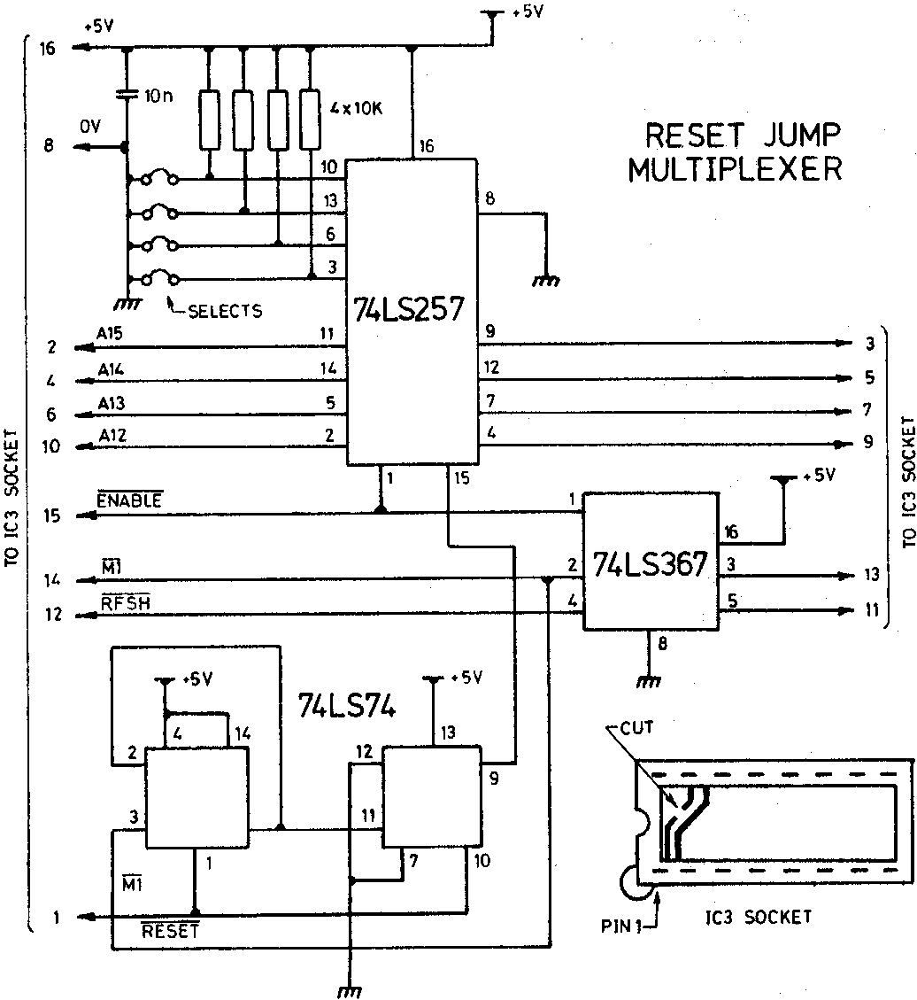

A word of warning about the action of the 74LS74, it fooled me (fortunately I
know Dave Hunt’s phone number, and he provided the answer). The 74LS74 circuit is
cleverer than it looks, it’s primed by the RESET signal, and then counts the first M1
signal it sees, it ignores the rising edge of the first M1 signal, but the output is
tripped on the falling edge of the next M1. This occurs before the next address from
the Z80 has stabilized on the bus and not after, as I thought.
The selection of the required jump address is made by forcing pins 3, 6, 10
and/or 13 low (that is, connected to 0V), or leaving the connections open so that the
10K resistors pull the inputs high.
A12 = pin 3 A13 = pin 6 A14 = pin 13 A15 = pin 10
Personally, I use a DIP switch here, but permanent links could be used. You could use
this circuit to jump straight to Basic on ROM (at E000H) if you wished. If you want to
move the EPROM area and the video up to F000H (for CP/M, or other uses, then this is
simply accompished by selecting P4 to 12 on the RAM (A) board. This allows MEXT to
pick up an F000H decode on ‘reset’. Obviously, this may be any one of the 16 possible
4K boundaries allowed by the RAM decoder.
Parts list
| 1 | 74LS257 |
| 1 | 74L8367 (IC3 from buffer board) |
| 3 | 16 pin dil sockets |
| 6″ | 16 way ribbon cable |
| 1 | pc Veroboard |
| 1 | 74L874 |
| 2 | 16 pin dil header plugs |
| 1 | 14 pin dil socket |
| 1 | 4 pole, dip switch (optional) |
| 4 | 10K resistors |
(Ed. – Gemini Microcomputers have brought out a small kit based on this circuit and it
uses a wire-wrap socket to plug into the buffer board. Price 10.00 + VAT and available
from your distributor.)
